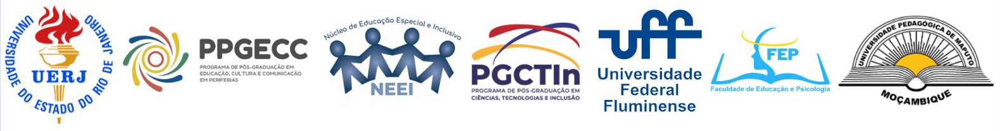
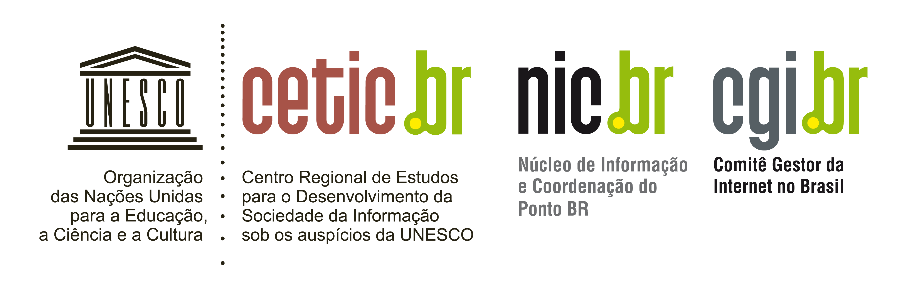

Módulo 5 — Fronteira Tecnológica
Sociedade digital,
docência em transformação
O que se espera dos professores numa educação mediada por tecnologias digitais e inteligência artificial?

O que se espera dos professores numa educação mediada por tecnologias digitais e inteligência artificial?
